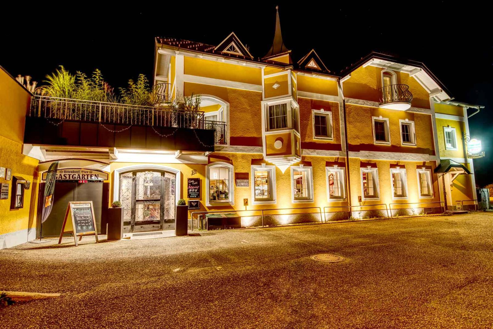

KTM Motohall
Ausflugsziel in Mattighofen – ein Programmpunkt, den viele unserer Gäste mit dem Besuch verbinden.
Kontakt & Anfahrt
Mitten in Mattighofen – zwei Gehminuten vom Stadtplatz, in unmittelbarer Nähe zum Bahnhof.

Rundherum
Ausflugsziel in Mattighofen – ein Programmpunkt, den viele unserer Gäste mit dem Besuch verbinden.
Ein Weg für alle, die nach dem Essen noch ein Stück gehen möchten.
Naturraum in der Region – ein Ziel für Spaziergänge und Radtouren.
Diese Ziele sind schon bisher als Ausflugstipps des Hauses angeführt. Öffnungszeiten und Eintritte erfragen Sie bitte beim jeweiligen Anbieter.
Eine kurze Bewertung auf den gängigen Portalen hilft anderen Gästen bei der Auswahl – in der Live-Version verlinken wir hier direkt auf die Profile des Hauses.